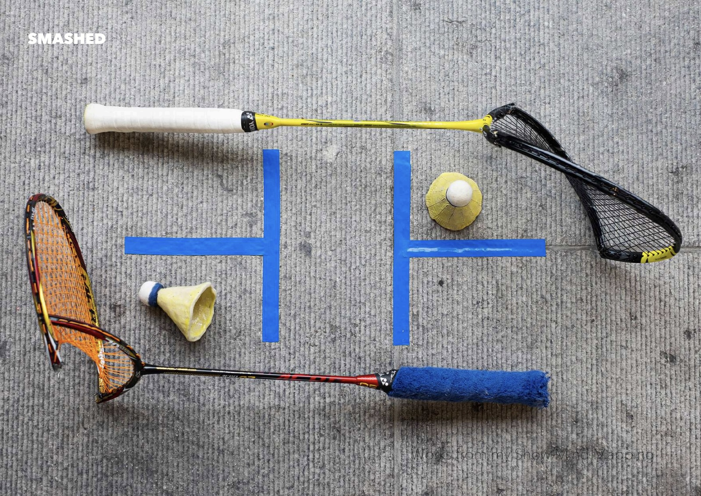
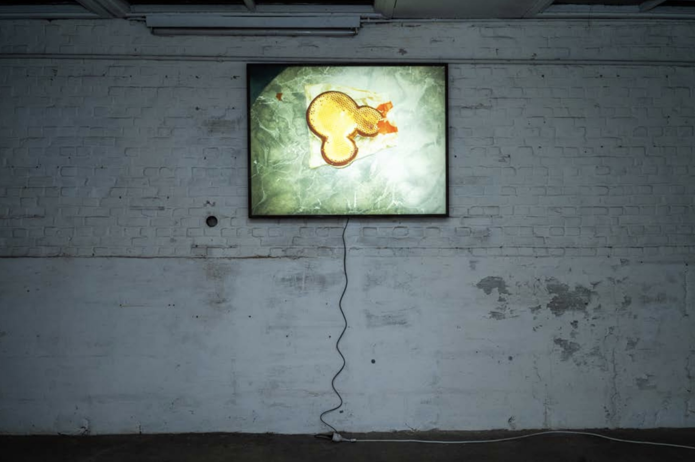
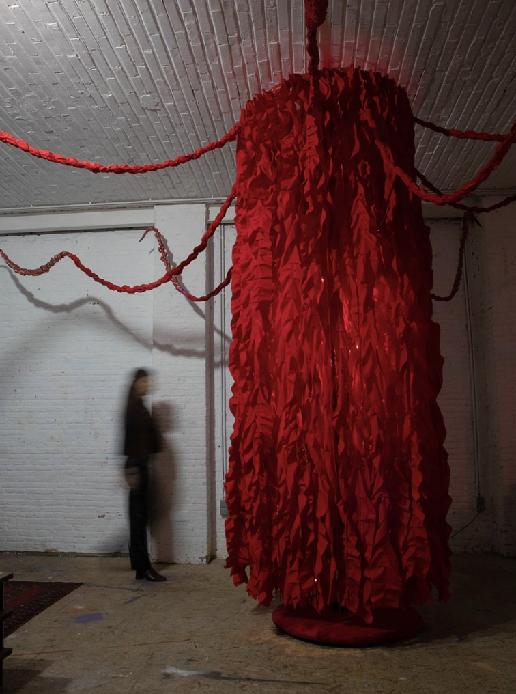
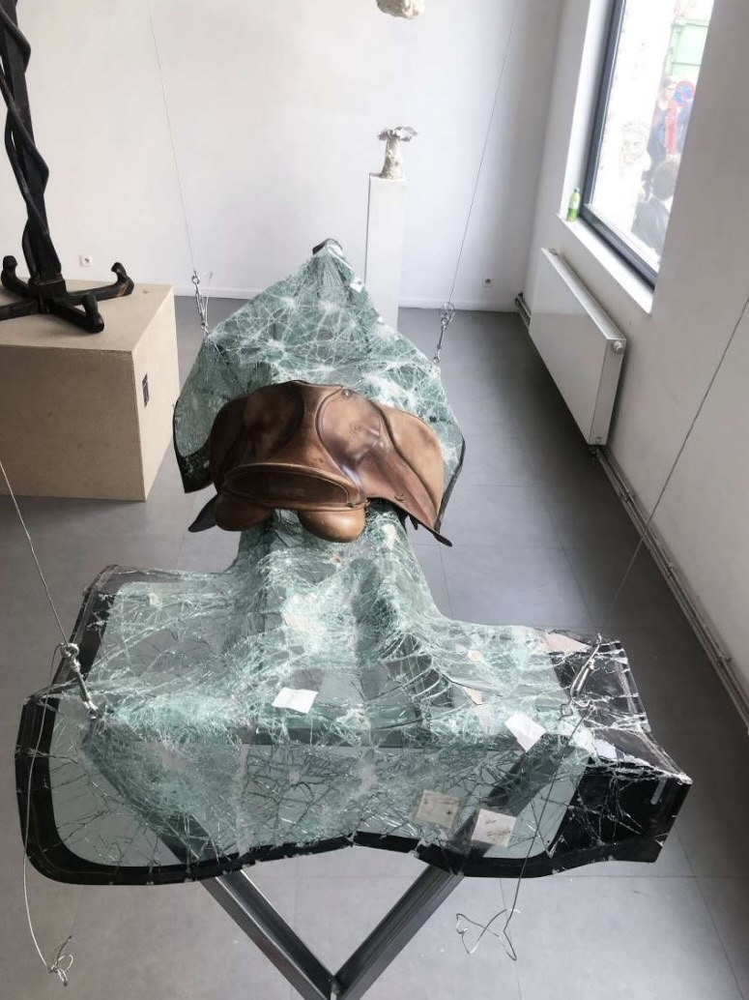
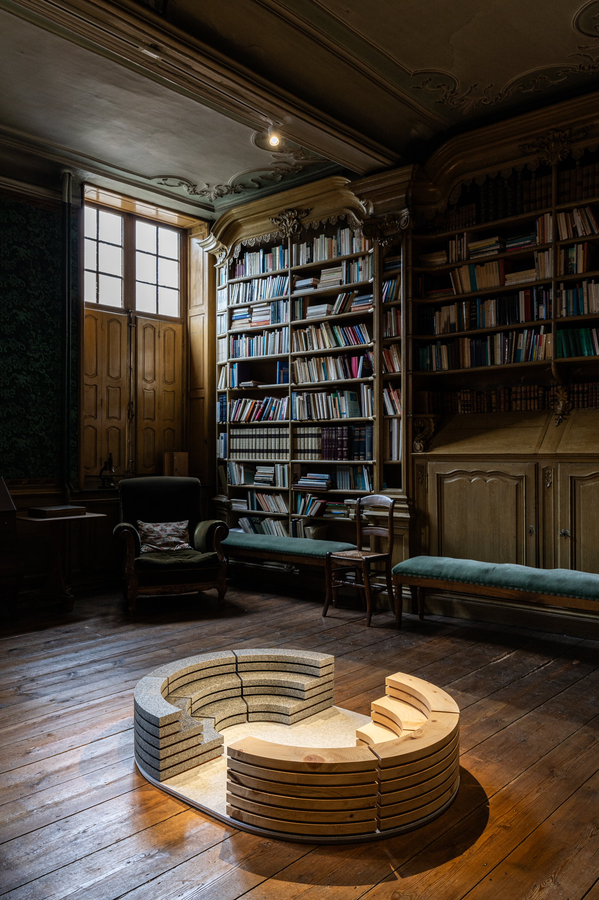
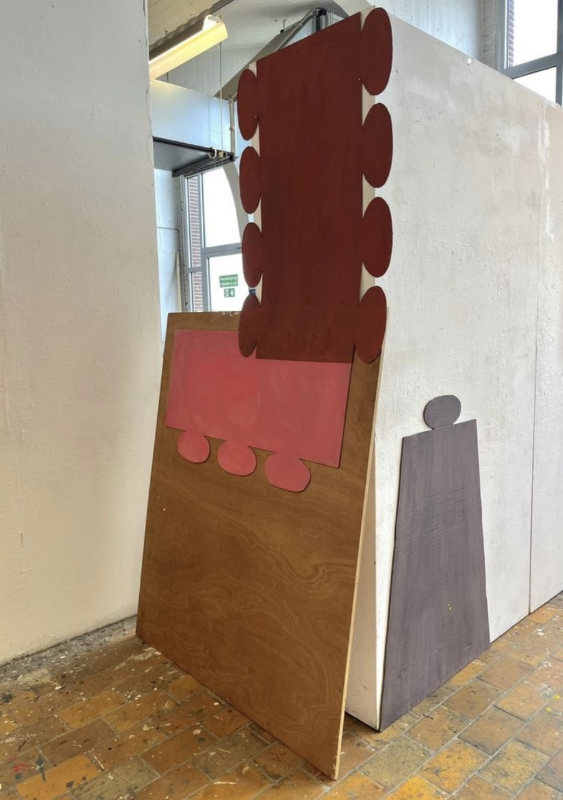
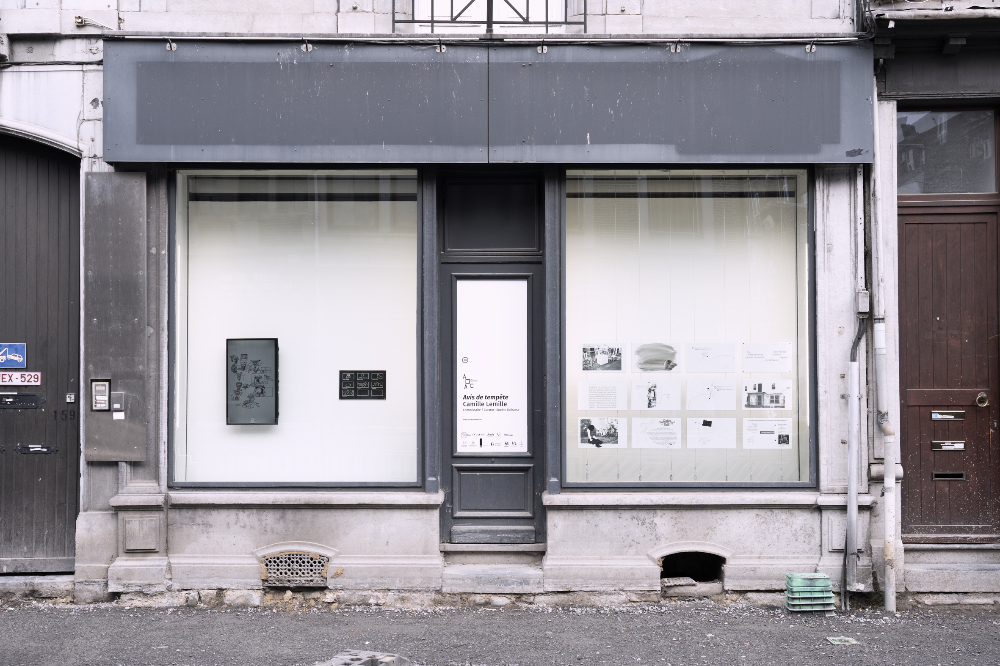
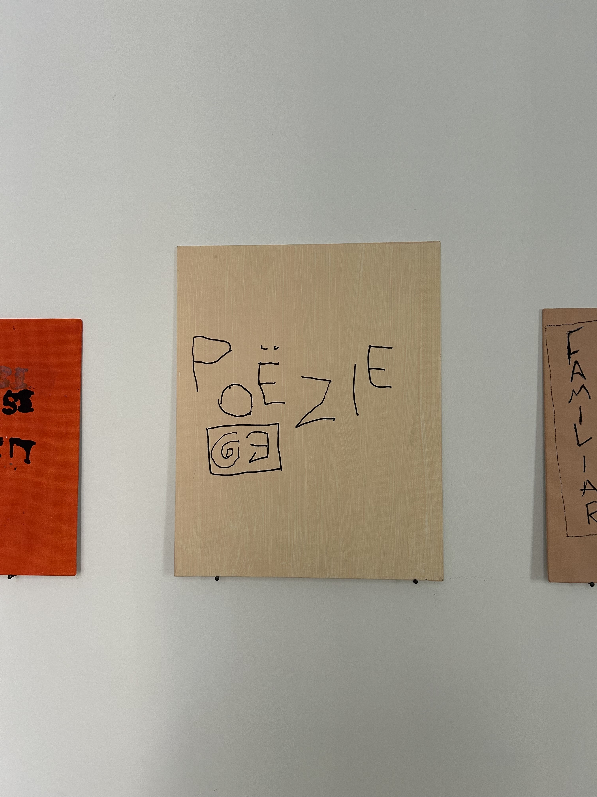

Stop 1 — Apotheek De Bond (Bondgenotenlaan 131)
Shailey Shah

Multidisciplinair: video, sculptuur, schilderkunst en installaties.

Multidisciplinair: video, sculptuur, schilderkunst en installaties.

Transparante doeken en raamkaders; binnen/buiten en zichtbaarheid.

Ruwe, directe snapshots uit de muziek- en kunstscene.

Poëtische, zintuiglijke installaties.

Intieme portretten en sculpturen: de ruimte tussen mensen.

Site-specifieke constructies; het knooppunt als zichtbaar gebaar.

Schilder/assemblage: ruimtelijke ingrepen met alledaagse dingen.

Performance/drukwerk/AV: taal als politiek-poëtisch materiaal.

Taal/performance/editie: identiteit en popcultuur.
Grafische partituren en stedelijke geluidslandschappen.